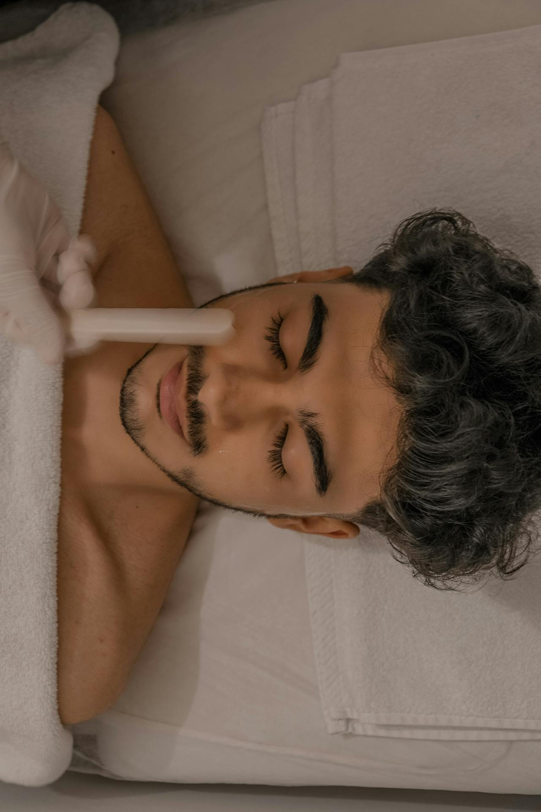

Finding the Best Facialist Near You: A Complete Guide (2025)

Let's be real: finding the perfect facialist is like dating. You want someone who gets you, someone who understands your needs, and someone who won't ghost you when you need them most. Most importantly, you just want to find that special someone who will treat your skin right. You’ve probably spent one too many hours scrolling through Oakland and Bay Area-wide Yelp and Google reviews just looking for someone you could trust. And you might have even hit up your friends with perfect, glowing skin asking them to hook you up. Well, luckily, your search is almost over! This guide will help you find the best facialist near you in 2025. So if you’ve got major skin care goals in the new year, read along to find how to meet your perfect skincare match.
Why You Need a Professional Facial (And No, Your Sheet Masks Aren't Cutting It)
Finding the right facialist or esthetician can transform your skincare journey from mass-market mayhem into a personalized wellness experience. Look, we love a good at-home spa day as much as anyone. But there's a reason why that jade roller you bought during the pandemic and the latest viral TikTok craze isn't giving you the same results as a professional facial.
Licensed estheticians bring years of specialized education and hands-on experience to each session, combining their deep understanding of skin physiology with advanced diagnostic skills. These professionals can identify underlying skin conditions that aren't visible to the untrained eye, analyzing everything from your skin's moisture barrier to its cellular turnover rate. Through their expert assessment, they create personalized treatment protocols that address both immediate concerns and long-term skin health goals. Moreover, estheticians have access to professional-grade products and equipment that deliver substantially more powerful results than any at-home device or over-the-counter product could achieve.
Getting to Know Your Options (Because Everyone Has a Type)
Not all facialists are created equally and, truthfully, finding your skincare soulmate might take a few swipes. Here are the types of facials to look for depending on your skin condition… or your vibe.
THE CLASSIC EUROPEAN FACIAL is a CASUAL FLING
This introductory facial is perfect for those new to professional skin care treatments (or those trying out a new esthetician for the first time) that’s kinda fun but quickly forgotten once you make it back home. So don’t expect results that will sweep you off your feet. In today’s treatment room, facialists are providing highly customized treatments that go beyond the basics this facial. This casual fling is a little too old school if you’re looking to go steady with an esthetician but is perfect for taking your mind off things for an hour.THE DERMAPLANE FACIAL is the SMOOTH OPERATOR
You can’t help but fall for this facial. You can get super smooth, glowing glass skin for weeks with dermaplaning. Using a super-fine blade, your esthetician will gently remove dead skin cells and peach fuzz, leaving your skin smoother than a baby's... well, you know. Plus, your makeup will glide on like butter afterward (if that’s your thing). But not everyone can handle a Smooth Operator. If your acne-prone or have deeper texture issues, this facial type won’t be a good match.THE HYDRAFACIAL is the ULTIMATE CASSANOVA
This is the type of date that leaves you glowing. The Hydrafacial pulls out all the stops with you. Champagne showers (deep cleansing via hydradermabrasion), gentle exfoliation, an expertly crafted cocktail of serum infusions for your skin, and it even lights up your world with a LED treatment. Plus it comes with perks for the eyes and lips. You’ll never want your moment with the Hydrafacial to end! But you’ve got to be careful because some estheticians are a little stingy with their Hydrafacial love. At GLOWDEGA®, we actually combine cupping, dermaplaning (if the skin allows), and a platinum Hydrafacial treatment with our experience resulting in 90 minutes of treatment time. Other estheticians limit the service to 30 minutes. Book our GLORY treatment for that experience today!THE ACNE FACIAL is the PERFECT PARTNER
Will they? Won’t they? The acne facial is the perfect date willing to tolerate your skin’s game of cat and mouse. Skin irritated and sensitive? Your acne facial will patiently calm things down with ease. Pimples being persistent? The acne facial takes the time to extract each one. And just when you thought you’d be in a toxic relationship with post-inflammatory hyperpigmentation forever, the acne facial comes through and makes things clear, reaffirming your beauty.
Our Oakland location specializes in custom skin treatments that address acne, hyperpigmentation, and overall skin rejuvenation concerns. When you’re looking to find your perfect facialist, you want to seek skin care studios that directly address your skin issues.
The Investment in Your Relationship (Understanding Treatment Costs)
In the Bay Area, facial prices are like housing prices – they vary wildly depending on location and what you're getting. Here's the real talk:
Basic facials in Oakland, Berkeley, Walnut Creek, and greater Bay Area might set you back $150-$200
You want to go for a basic facial if you don’t really have skin concerns and are just looking for casual maintenance. Most basic facials will not provide long-term results but they will make you feel nice!Hydrafacials, Microdermabrasion, Dermaplaning, and professional enzyme treatments can be $199-$300
Pricing for these facial treatments vary the most in the Bay Area. Dermaplaning is generally the most affordable option amongst all skin care studios, however.Advanced treatments like microneedling, chemical peels, laser facials and Botox/fillers: $400+
(still cheaper than time travel to get younger skin)
We offer the best pricing in the Bay Area for our members. Our monthly GRAND CRU membership includes a custom 45-minute facial and is only $150! Sign up here if you’re interested.
The First Date Questions: What to Ask Before Committing
Before you commit to your first appointment, channel your inner journalist:
"What's your experience with [insert your specific skin drama here]?"
"What's your philosophy on skincare?" (Yes, this is a real question, and no, it's not too deep)
"What's your approach to product recommendations? (Nobody likes a pushy salesperson)
"What's your cancellation policy?” (Because life happens)
These are generally great questions that allow you to gauge an esthetician’s expertise and also help you feel more comfortable.
Recognizing Red Flags: When to Swipe Left
Run faster than you would from an ex if you encounter:
An esthetician who doesn't ask about your skin history (they should be as curious as your mom about your life)
Anyone who will give you a chemical peel as a first-time appointment
Someone pushing expensive packages without understanding your needs
Anyone promising miracle results overnight (if only!)
The Perfect Match: Finding Your Skincare Soulmate
The Bay Area is like a treasure trove of skincare talent. Whether you're specifically looking for a Black esthetician who understands your skin tone, an LGBTQIA-friendly space where you can truly feel comfortable, or someone who specializes in your specific skin concerns, they're out there. If you come to GLOWDEGA®, you’ll find we’re the perfect place for your face! And if you just can’t seem to catch a vibe with us, we will work with you to find the right esthetician for you. (But you really should book with us, we already know you’ll fall in love!)